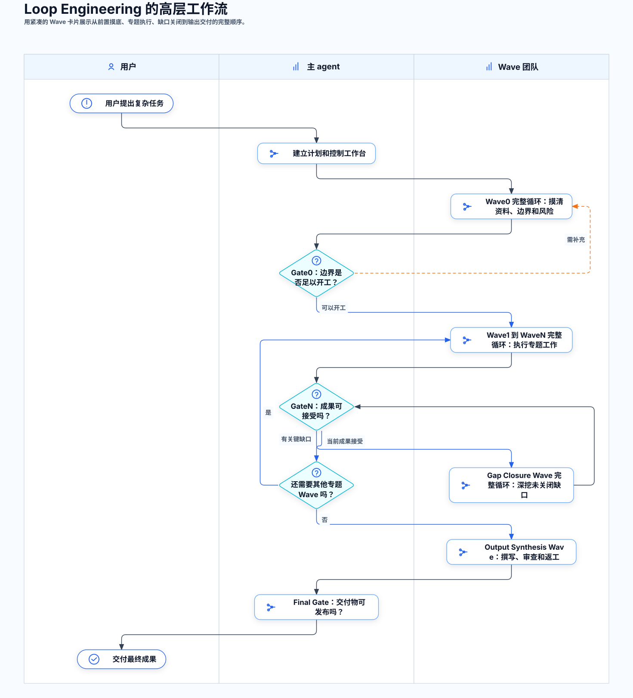
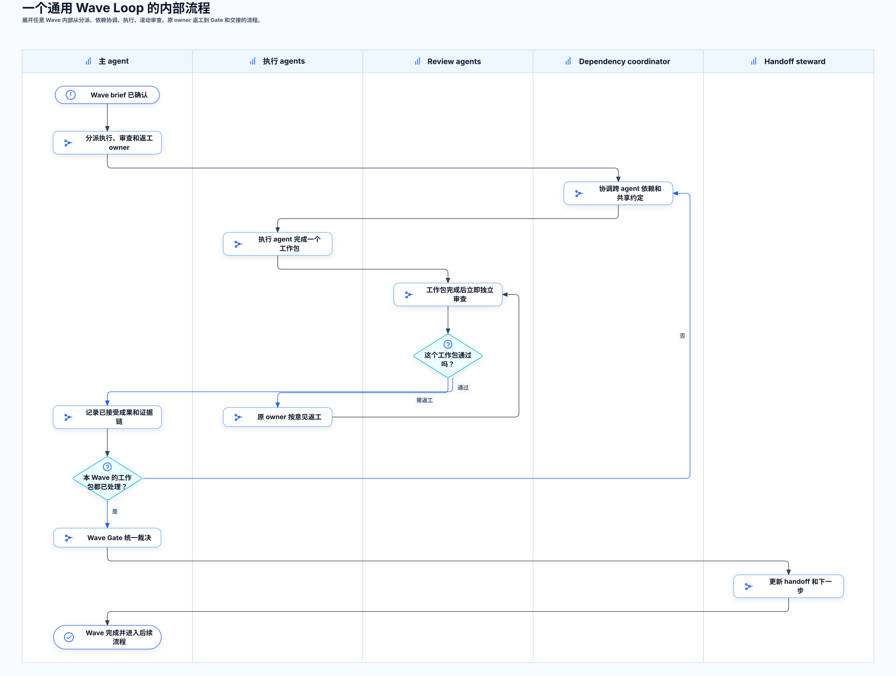
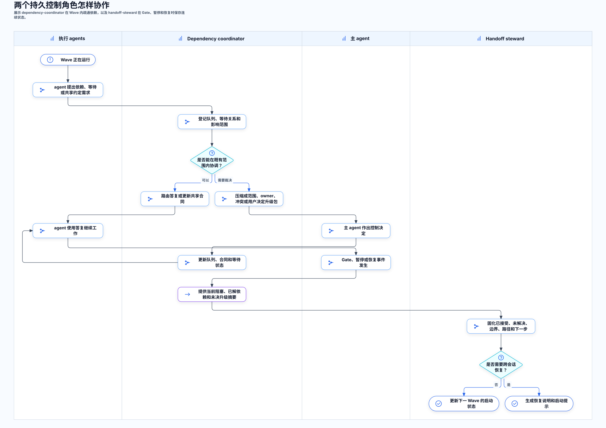
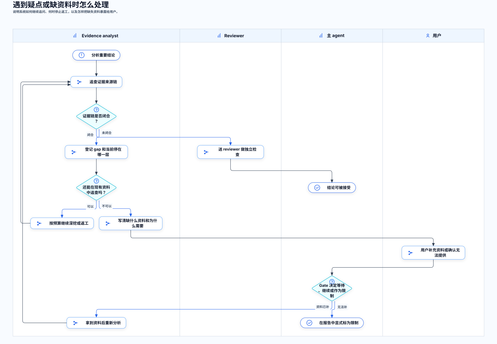

一句话理解
普通 Codex 对话像“请一个人一路做完”。Loop Engineering Orchestrator 更像“给复杂项目搭一个工作台”：先定边界，再分派角色，边做边审查，返工有 owner，缺资料会公开记录，最后只把通过审查或明确标注限制的内容放进交付物。
它管理过程，不替你决定答案
它不保证所有问题都能自动解决，但会让每一步、每个证据、每个未解决问题都留下记录。
它把任务拆给合适角色
执行、审查、返工、报告撰写和交接不是混在一个长上下文里，而是按角色和 Wave 管理。
它专门防止中途失忆
长任务会留下 handoff、状态文件、队列和 Gate 记录。新会话接手时不用从头猜。
什么时候适合用
只要你担心“普通对话会越跑越长、越跑越乱、证据越积越多”，就可以考虑用它。下面是最常见的适用范围。
适合
- 需要读很多文件、报告、表格、日志或网页。
- 需要多个 agent 分头研究，再互相检查。
- 结果必须能说明“证据从哪里来”。
- 有较高返工风险，不能让主 agent 随手修一修就算完成。
- 最后要写正式报告、汇总文档、图表或长期可复用成果。
不太适合
- 一句话能答完的普通问题。
- 只需要改一个小错、查一个简单路径、翻译一小段文字。
- 你不希望使用 subagent 或不希望保留工作记录。
- 任务没有明确目标，也没有可用资料，连基本方向都还没想好。
- 你要求“马上给一个大概答案”，而不是做可审查的工作。
图 1：使用前先判断任务复杂度和资料边界。合同源文件：diagrams/fit-check.yaml。
使用前要准备什么
你不需要会编程，但最好能提前说清楚这些内容。说得越清楚，后续 Wave0 和 Gate0 就越少返工。
例如报告、结论、代码修改、数据诊断、PPT、图表，还是一个可以继续执行的计划。
文件夹、文档、表格、日志、截图、网页、邮件、SharePoint、Teams 等。能给路径就给路径。
比如不能访问 live system、不能写数据库、不能改生产文件、只能看复制出来的资料。
这个 skill 默认偏质量和可追踪。你也可以说哪些部分可以粗略，哪些必须严格。
多个 agent 可以并行省时间，但会产生更多状态文件、队列和审查记录。
完整工作流程
Loop Engineering 有两个观察层级：先看多个完整 Wave 怎样组成项目，再看任意一个 Wave 内部怎样执行、滚动审查、返工、裁决和交接。Wave0 也是完整 Wave，只是工作类型是前置摸底。

图 2：项目级 Wave 序列。每个 Wave 卡片都代表一个完整循环。合同源文件：diagrams/program-flow.yaml。

图 3：一个通用 Wave Loop 的内部流程。合同源文件：diagrams/wave-loop.yaml。
先摸清边界
执行 agents 完成资料、风险和边界摸底，review agents 独立审查，原 owner 负责返工；它与其他 Wave 一样完整。
执行和审查一起推进
一个工作包完成后就可以立即 review，不必等所有执行 agent 都结束。
最后统一裁决
主 agent 决定哪些成果接受、哪些返工、哪些进入专门的 Gap Closure Wave，或作为限制写入后续。
角色怎么分工
你可以把它理解成一个小项目组。不同角色不是为了热闹，而是为了避免主 agent 一个人背太多上下文。
custom agents 是可选参考，不是强制依赖
这个 skill 强制的是执行、独立 review、依赖协调、handoff 等职责能力，而不是某几个固定 TOML 名称。
每个逻辑职责都可以绑定到场景匹配的 custom agent，也可以绑定到 Codex 标准
explorer、worker 或 default。
仓库的 custom-agents/ 是当前内容和证据研究场景的参考角色包，可以选择安装，
但不应把 evidence-analyst 的研究提示强加给编程、大规模数据分析或所有内容输出任务。
缺少这些 TOML 时，使用标准 subagent 是正常 provider 路径，不是降级或临时 fallback。
只有 custom 和标准 subagent 都无法满足必要能力时才形成 control gap。
具体绑定必须写入 agent_roster.md，明确 logical role、provider kind、实际 agent type 和选择理由。
同一职责可以由不同 provider 承担
| 逻辑职责 | 可选 custom 参考 | 标准 subagent 路径 |
|---|---|---|
| 代码库或资料摸底 | evidence-analyst | explorer 处理代码库问题；default 处理文档、数据和混合研究 |
| 编程、数据处理或文件型交付物 | 场景专用执行 agent | worker，并给出不重叠的写入范围 |
| 独立 review、测试或 QA | reviewer | 独立的 default；代码库只读检查可用 explorer |
| dependency-coordinator | dependency-coordinator | 持久 default，获得依赖队列和路由工作包 |
| handoff-steward | handoff-steward | 持久 default，获得 checkpoint 和恢复工作包 |
| 大规模内容或视觉输出 | output-synthesizer / visual-producer | worker 负责文件型产出，另用独立 default review |
下表描述的是稳定的逻辑职责和边界；角色名可以由 custom 或标准 provider 实现。
| 逻辑职责（参考角色名） | 普通用户可以怎么理解 | 不能做什么 |
|---|---|---|
| 主 agent | 项目负责人，负责定范围、分配工作、做 Gate 决策。 | 不应该亲自吞掉所有细节，也不应该绕过 review。 |
| handoff-steward | 会议纪要和交接负责人，保留当前状态、下一步、阻塞点。 | 不做主分析，不替 reviewer 判断质量。 |
| dependency-coordinator | 协调员，帮多个 agent 之间传递问题、依赖和共享约定。 | 不裁决证据真假，不接受或拒绝成果。 |
| evidence-analyst | 证据研究员，追查资料、来源链、机制和不确定点。 | 不能把中间数据直接当源头，也不能把缺口说成结论。 |
| reviewer | 独立审查员，检查证据、逻辑、可读性、测试和遗漏。 | 不直接接管原 owner 的工作，除非主 agent 记录了转交。 |
| visual-producer | 视觉交付物制作人，负责一次性的图表、流程图、PPT、HTML 视觉报告和图片输出。 | 不维护底层视觉 skill，也不能用视觉包装掩盖证据缺口。 |
| output-synthesizer | 报告写作者，只把已接受成果和已声明限制写成正式文本。 | 不能新编事实，不能把不确定内容写得更确定。 |
两个持久控制角色怎样工作
大多数 subagent 接收一个工作包、产出一个成果，然后退出；这两个角色不同。它们会在 Loop 中持续存在，
但负责不同时间尺度：dependency-coordinator 管 Wave 运行中的依赖流，handoff-steward 管 Gate、暂停、
恢复和跨会话的状态连续性。这里描述的是逻辑职责；它们既可以由同名 custom agent 承担，也可以由持久
default agent 按专用工作包承担。

图 4：两个持久控制角色的协作方式。合同源文件：diagrams/control-roles.yaml。
dependency-coordinator：Wave 内的依赖调度
最直接的场景：同一个 Wave 里的执行 agent A 发起一个面向执行 agent B 的 request，例如索要中间 artifact、字段解释、source map、schema、接口约定或其他由 B 持有的输出。A 不需要先请示主 agent。
统一通道：A 把 request 写入 dependency_requests.jsonl，其中包含 requester、target agent、需要的输出和截止时间。coordinator 登记、去重并路由给 B；B 把 response 和 artifact pointer 写入 dependency_responses.jsonl；coordinator 再关联回原 request 并通知 A 继续。
即时消息的地位：如果运行环境支持直接消息，可以用它提醒 B，但统一文件队列才是 source of truth，不能用不可追踪的 A/B 私聊替代。普通 request 不需要占用主 agent 上下文。
其他介入场景：多个 agent 互相等待、共享同一 schema 或术语、请求重复、合同版本变化，或出现循环依赖时。
持续维护：dependency_requests.jsonl、等待关系、dependency_graph.md、共享合同版本和阻塞状态。
可以直接处理：在既有 scope 和 owner 不变的前提下，路由答复、合并重复请求、提醒受影响 agent、维护共享合同索引。
必须升级：需要改变 scope、owner、证据权威、用户授权或 Gate 决定时，只压缩成升级包交给主 agent。
handoff-steward：跨阶段的连续性管理
何时介入：Gate 完成、任务暂停、上下文过长、会话中断、准备恢复或需要交给新会话时。
持续保存：已接受与未解决内容、当前权威文件、active gaps、source requests、授权边界、阻塞点和下一步 owner。
主要产出：handoff.md、恢复记录、下一步队列，以及必要时可直接用于新会话的启动提示。
不承担：它不实时派发依赖、不重新做 evidence analysis，也不代替 reviewer 判断成果质量。
Wave 内事件统一怎么走
skill 不要求 agent 临场猜该找谁，而是先给事件分类，再进入唯一的记录入口。完整规则位于
references/wave-interaction-protocol.md。
| Wave 内发生什么 | 统一记录入口 | 第一责任角色 | 什么时候升级 |
|---|---|---|---|
| Agent A 向 Agent B 请求输出 | dependency_requests.jsonl / dependency_responses.jsonl |
dependency-coordinator | 触及 scope、owner、证据权威、授权或 Gate |
| 多个 agent 共用 schema、source map 或术语 | shared_contracts/ 和 dependency_graph.md |
合同 owner + dependency-coordinator | 没有 owner、版本冲突或影响已接受成果 |
| 工作包准备好接受独立审查 | review_queue.jsonl |
reviewer | 缺少证据、权威冲突或需要 scope 决定 |
| reviewer 要求返工 | rework_queue.jsonl |
原 artifact owner | 预算耗尽、需要换 owner 或属于系统性问题 |
| 缺文件、数据、日志、授权或用户决定 | source_requests.jsonl 和 gap_ledger.md |
evidence owner | 需要用户行动、授权或 Gate 接受限制 |
| agent 对证据含义、机制或计算有冲突 | dependency_conflicts.md |
reviewer | 影响权威、接受状态或下游计划 |
| 重复请求、循环等待或 stale blocker | 依赖队列和 dependency_graph.md |
dependency-coordinator | 必须改变 scope、owner 或请求用户输入 |
| Gate、暂停、恢复或跨会话续接 | gate_log.md、handoff.md、recovery_log.md |
主 agent + handoff-steward | 需要用户决定或授权 |
深挖证据和暴露缺口的工作原则
这不是每个 Loop 都必须按图逐步执行的标准动作，而是贯穿各类 Wave 的处事原则：agent 不应只回答一层结果，而要追问“这个表从哪里来”“这个命令输出是谁生成的”“更早的源头是什么”。如果追不到，就必须把缺口暴露出来。

图 5：深挖证据和暴露缺口的工作原则。合同源文件：diagrams/gap-handling.yaml。
gap ledger 是什么？
它是“未解决问题登记表”。每个 gap 都要说明是谁发现的、停在哪一层、已经尝试过什么、还缺什么、对结论信心有什么影响。
source request 是什么？
当现有资料不够，agent 不能继续靠猜。它要明确告诉你：缺哪个文件、日志、数据或授权；为什么需要；有没有替代资料。
你会看到哪些输出
计划类文件
说明任务目标、资料边界、风险、Wave 安排、角色分工。你可以把它当作项目计划。
状态和队列
记录每个 agent 当前在做什么、等谁、哪里阻塞、哪些内容需要 review 或返工。
最终交付物
报告、图表、代码修改、知识包或其他成果。它应该只整合已接受内容和明确标注的限制。
给普通用户的启动提示模板
你可以复制下面这段作为开头，然后把括号里的内容换成你的任务信息。
怎么判断它跑得好不好
好迹象
- 一开始就问清目标、资料、限制和成功标准。
- 每个 agent 有明确工作包和 owner。
- review 是滚动发生的，不是最后才统一检查。
- 返工回到原 owner，不由主 agent 悄悄代修。
- 缺资料时出现明确的 gap 或 source request。
坏迹象
- 研究只停在浅浅一层，就把零散信息拼成一个看似自洽的故事并宣布完成。
- 很多结论没有来源，只说“看起来是”。
- 主 agent 把所有分析、审查、报告都自己做完。
- 执行 agent 完成后很久才开始 review。
- 遇到缺资料继续猜，而不是暴露给用户。
- 最终报告把限制和不确定性写没了。
最后的使用建议
如果任务很长，不要急着让 Codex 直接写最终答案。先让它用这个 skill 建立工作台，再逐轮推进。你作为用户最重要的角色不是写代码，而是提供边界、确认授权、补充缺失来源，并在关键 Gate 上判断“这个结果是否可以接受”。